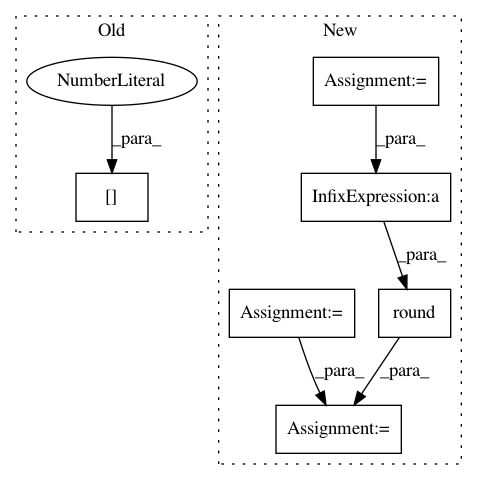

3cdd0ddb974ba967e9d39e9b275bedc89badd73b,chiron/export_test.py,,input_output_list,#,26
Before Change
logits, _ = inference(x, seq_length, training=training)
predict = tf.nn.ctc_greedy_decoder(tf.transpose(logits, perm=[1, 0, 2]), seq_length, merge_repeated=True)
input_dict = {"x": x, "seq_length": seq_length, "training": training}
output_dict = {"decoded_indices": predict[0][0].indices, "decoded_values": predict[0][0].values,
"neg_sum_logits": predict[1]}
return input_dict, output_dict
After Change
full_sequence_len = FLAGS.segment_len,
configure = model_configure)
ratio = tf.constant(ratio,dtype = tf.float32,shape = [])
seq_length_r = tf.cast(tf.round(seq_length/ratio),tf.int32)
prob_logits = path_prob(logits)
predict = tf.nn.ctc_beam_search_decoder(tf.transpose(logits, perm=[1, 0, 2]),
seq_length_r,
merge_repeated=True,
beam_width = FLAGS.beam_width)
input_dict = {"x": x, "seq_length": seq_length, "training": training}
output_dict = {"predict_sequences":predict,"logits":logits, "prob_logits":prob_logits}
return input_dict, output_dict
def build_and_run_exports(job_dir, serving_input_fn):
In pattern: SUPERPATTERN
Frequency: 3
Non-data size: 6
Instances
Project Name: haotianteng/Chiron
Commit Name: 3cdd0ddb974ba967e9d39e9b275bedc89badd73b
Time: 2018-09-07
Author: havens.teng@gmail.com
File Name: chiron/export_test.py
Class Name:
Method Name: input_output_list
Project Name: Microsoft/nni
Commit Name: 19173aa4370e36cba96ee7049eaaa0dceda5007c
Time: 2019-08-14
Author: suiguoxin@gmail.com
File Name: src/sdk/pynni/nni/metis_tuner/metis_tuner.py
Class Name: MetisTuner
Method Name: update_search_space
Project Name: Microsoft/nni
Commit Name: 3b60f1157530b1e6610f92766358bf0cf05a86d0
Time: 2019-08-12
Author: suiguoxin@gmail.com
File Name: src/sdk/pynni/nni/metis_tuner/metis_tuner.py
Class Name: MetisTuner
Method Name: update_search_space